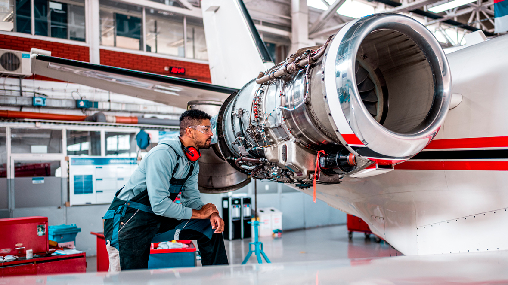

Meu primeiro Post:Por que a Aviação é tão segura?
A aviação é considerada o meio de transporte mais seguro do mundo por conta de um conjunto rigoroso de fatores que trabalham juntos todos os dias. Aqui estão os principais motivos pelos quais voar é tão seguro: Tecnologia de ponta e redundância:Os aviões modernos são verdadeiras obras-primas da engenharia. Eles possuem sistemas "redundantes", o que significa que se um componente falhar, existem outros sistemas de reserva prontos para assumir a mesma função imediatamente. Manutenção rigorosa: Cada aeronave passa por inspeções detalhadas e obrigatórias antes e depois de cada voo. A manutenção preventiva garante que qualquer desgaste seja corrigido muito antes de se tornar um problema. Cultura de segurança global: O setor aéreo aprende com cada erro. Quando um incidente acontece em qualquer lugar do mundo, as investigações são minuciosas e as regras globais mudam para garantir que o mesmo problema nunca mais se repita. Entrar em um avião hoje significa contar com o trabalho de milhares de profissionais e décadas de evolução tecnológica focadas em uma única missão: fazer você chegar bem ao seu destino.

Segundo Post:Como funciona o "Piloto Automático" dos aviões?
Muitas pessoas acham que o piloto automático faz tudo sozinho ou que os pilotos não trabalham durante o voo. Esse tema rende um post super engajador! Você pode abordar: O que ele realmente faz: Explicar que ele funciona como um "assistente de navegação" super avançado, mantendo a altitude e a rota programadas para que os pilotos foquem no monitoramento dos sistemas e na comunicação. Quando ele é usado: Mostrar que os pilotos ainda comandam manualmente a decolagem e, na maioria das vezes, o pouso. O fator humano: Destacar que a máquina não substitui o julgamento dos pilotos, que tomam as decisões estratégicas em caso de turbulência ou mudanças de rota.
Afinal, a turbulência pode derrubar um avião? Como as aeronaves reagem a ela
quase todo mundo já passou por um chacoalho no ar e sentiu aquele frio na barriga. As asas funcionam como amortecedores: Explique que as asas dos aviões modernos são feitas para serem flexíveis. Em uma turbulência, elas dobram para cima e para baixo para absorver o impacto do ar, funcionando exatamente como a suspensão de um carro em uma estrada esburacada. Projetados para o pior cenário: Mostre que os aviões são testados em limites extremos que nunca seriam encontrados na vida real. Eles aguentam forças muito maiores do que qualquer tempestade ou corrente de ar possa produzir. O ar é um "fluido": Use a metáfora de que o avião não está caindo no vazio; ele está navegando pelo ar. A turbulência é apenas o equivalente a um barco passando por marolas na água. O avião balança, mas continua sustentado pelo ar. A tecnologia dos radares: Conte que os pilotos usam radares meteorológicos modernos para mapear áreas de instabilidade e, na maioria das vezes, desviam da turbulência antes mesmo dos passageiros perceberem.